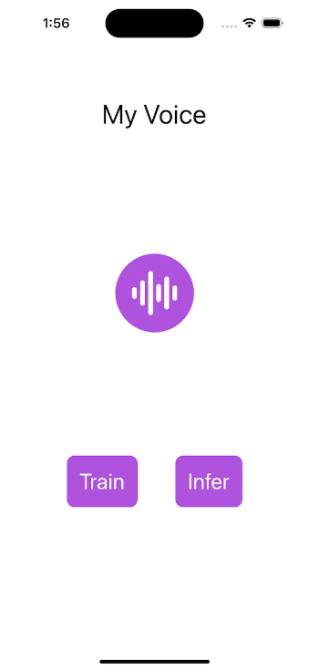

Run PyTorch models on the edge
12th October, 2023
Most modern ML models are developed with PyTorch. The agility and flexibility that PyTorch provides for creating and training models has made it the most popular deep learning framework today. The typical workflow is to train these models in the cloud and run them from the cloud as well. However, many scenarios are arising that make it more attractive – or in some cases, required – to run locally on device. These include:
- Avoiding network round-trips to the cloud (for example in audio and video processing)
- Keeping user data on device (for privacy protection or regulatory requirements)
- High cost of cloud resources (especially when device capabilities are underutilized)
- Application requirements to operate without internet connectivity

In this article, we'll demystify running PyTorch models on the edge. We define 'edge' as anywhere that is outside of the cloud, ranging from large, well-resourced personal computers to small footprint devices such as mobile phones. This has been a challenging task to accomplish in the past, but new advances in model optimization and software like ONNX Runtime make it more feasible – even for new generative AI and large language models like Stable Diffusion, Whisper, and Llama2.
Considerations for PyTorch models on the edge
There are several factors to keep in mind when thinking about running a PyTorch model on the edge:
- Size: modern models can be several gigabytes (hence the name Large Language Models!). On the cloud, size is usually not a consideration until it becomes too large to fit on a single GPU. At that point there are various well-known solutions for running across multiple GPUs. For edge devices, we need to find models that can fit within the constraints of the device. This sometimes requires a tradeoff with quality. Most modern models come in several sizes (1 billion parameters, 13 billion parameters, 70 billion parameters, etc) so you can select a variant that fits on your device. Techniques such as quantization are usually applied to reduce the number of bits representing parameters, further reducing the model size. The size of the application is also constrained by the app stores, so bringing in gigabytes of libraries won't work on the edge.
- API for application integration: on the cloud, models are usually packaged as Docker containers that expose an endpoint that is called by an application or service. On edge devices, Docker containers may take up too many resources or may not even be supported. By using an optimized engine, like ONNX Runtime, the dependency on Python and Docker containers can be eliminated. ONNX Runtime also has APIs in many languages including C, C++, C#, Rust, Java, JavaScript, Objective-C and Swift for making it easier to integrate natively with the hosting application.
- Performance: with large amounts of memory, no power restrictions, and hefty compute capabilities, running non-optimized models on the cloud is possible. On edge devices, these luxuries do not exist and optimization is crucial. For example, ONNX Runtime optimizes memory allocations, fuses model operators, reduces kernel launch times, minimizes tensor transfers between processing units, and applies tuned matrix math algorithms. It’s also able to make use of compilers and engines that are device-specific, providing a common interface for your application while harnessing the best approach on each device.
- Maintainability: on the cloud, updating a model is as simple as deploying a new container image and ramping up traffic. On the edge, you need to consider how you will distribute model updates. Sometimes this involves publishing updates to an app store, sometimes it might be possible to implement a data update mechanism within your app and download new model files or maybe even deltas. There are many possible paths, so we won’t go into much depth on this topic in this article but it’s an aspect to keep in mind as you plan for production.
- Hybrid: instead of cloud versus device, you can choose to utilize both. There are several hybrid patterns that are used in production today by applications such as Office. One pattern is to dynamically decide whether to run on the device or in the cloud based on network conditions or input characteristics. Another pattern is to run part of the model pipeline on the device and part on the cloud. This is especially useful with modern model pipelines that have separate encoder and decoder stages. Using an engine like ONNX Runtime that works on both cloud and device simplifies development. We’ll discuss hybrid scenarios in more detail in a forthcoming article.
- Personalization: in many cases, the PyTorch model is simply being run on the device. However, you may also have scenarios where you need to personalize the model on the device without sending data to the cloud. Recommendation and content targeting are example scenarios that can improve their quality by updating models based on activity on the device. Fine tuning and training with PyTorch on the device may not feasible (due to performance and size concerns) but using an engine like ONNX Runtime allows PyTorch models to be updated and personalized locally. The same mechanism also enabled federated learning, which can help mitigate user data exposure.
Tools for PyTorch models on the edge
We mentioned ONNX Runtime several times above. ONNX Runtime is a compact, standards-based engine that has deep integration with PyTorch. By using PyTorch's ONNX APIs, your PyTorch models can run on a spectrum of edge devices with ONNX Runtime.
The first step for running PyTorch models on the edge is to get them into a lightweight format that doesn't require the PyTorch framework and its gigabytes of dependencies. PyTorch has thought about this and includes an API that enables exactly this - torch.onnx. ONNX is an open standard that defines the operators that make up models. The PyTorch ONNX APIs take the Pythonic PyTorch code and turn it into a functional graph that captures the operators that are needed to run the model without Python. As with everything in machine learning, there are some limitations to be aware of. Some PyTorch models cannot be represented as a single graph – in this case you may need to output several graphs and stitch them together in your own pipeline.
The popular Hugging Face library also has APIs that build on top of this torch.onnx functionality to export models to the ONNX format. Over 130,000 models are supported making it very likely that the model you care about is one of them.
In this article, we'll show you several examples involving state-of-the-art PyTorch models (like Whisper and Stable Diffusion) on popular devices (like Windows laptops, mobile phones, and web browsers) via various languages (from C# to JavaScript to Swift).
Examples of PyTorch models on the edge
Stable Diffusion on Windows
The Stable Diffusion pipeline consists of five PyTorch models that build an image from a text description. The diffusion process iterates on random pixels until the output image matches the description.
To run on the edge, four of the models can be exported to ONNX format from HuggingFace.
from optimum.onnxruntime import ORTStableDiffusionPipeline
pipeline = ORTStableDiffusionPipeline.from_pretrained("CompVis/stable-diffusion-v1-4", export=True)
pipeline.save_pretrained("./onnx-stable-diffusion")
You don't have to export the fifth model, ClipTokenizer, as it is available in ONNX Runtime extensions, a library for pre and post processing PyTorch models.
To run this pipeline of models as a .NET application, we build the pipeline code in C#. This code can be run on CPU, GPU, or NPU, if they are available on your machine, using ONNX Runtime's device-specific hardware accelerators. This is configured with the ExecutionProviderTarget below.
static void Main(string[] args)
{
var prompt = "Two golden retriever puppies playing in the grass.";
var config = new StableDiffusionConfig
{
NumInferenceSteps = 50,
GuidanceScale = 7.5,
ExecutionProviderTarget = StableDiffusionConfig.ExecutionProvider.Cpu,
DeviceId = 0,
TokenizerOnnxPath = @".\models\tokenizer\model.onnx",
TextEncoderOnnxPath = @".\models\text_encoder\model.onnx",
UnetOnnxPath = @".\models\unet\model.onnx",
VaeDecoderOnnxPath = @".\models\vae_decoder\model.onnx",
SafetyModelPath = @".\models\safety_checker\model.onnx",
};
var image = UNet.Inference(prompt, config);
if (image == null)
{
Console.WriteLine("Unable to create image, please try again.");
}
}
This is the output of the model pipeline, running with 50 inference iterations:
You can build the application and run it on Windows with the detailed steps shown in this tutorial.
Text generation in the browser
Running a PyTorch model locally in the browser is not only possible but super simple with the transformers.js library. Transformers.js uses ONNX Runtime Web as its backend. Many models are already converted to ONNX and served by the tranformers.js CDN, making inference in the browser a matter of writing a few lines of HTML:
<html>
<body>
<h1>Enter starting text …</h1>
<form id="form">
<input type="text" id="inputText">
<button type="submit" id="submitButton">Submit</button>
</form>
<div id="output"></div>
<script type="module">
import { pipeline } from 'https://cdn.jsdelivr.net/npm/@xenova/transformers@2.6.2';
let inputText = document.getElementById('inputText');
let outputDiv = document.getElementById('output');
let submitButton = document.getElementById('submitButton');
submitButton.addEventListener('click', async (e) => {
e.preventDefault();
let generator = await pipeline('text-generation', 'Xenova/LaMini-Neo-125M');
let result = await generator(inputText.value,
{ max_new_tokens: 200,
temperature: 2,
repetition_penalty: 1.5,
no_repeat_ngram_size: 2,
num_beams: 2,
num_return_sequences: 1,
});
outputDiv.innerHTML = result[0].generated_text;
});
</script>
</body>
</html>
You can also embed the call to the transformers pipeline using vanilla JavaScript, or in a web application, with React or Next.js, or write a browser extension.
ONNX Runtime Web currently uses web assembly to execute the model on the CPU. This is fine for many models but leveraging the GPU, if one exists on the device, can improve the user experience. ONNX Runtime Web support for WebGPU is coming *very* soon and enables you to tap into the GPU while use the same inference APIs.

Speech recognition with Whisper on mobile
Whisper from OpenAI is a PyTorch speech recognition model. Whisper comes in a number of different size variants - the smallest, Whisper Tiny, is suitable to run on mobile devices. All components of the Whisper Tiny model (audio decoder, encoder, decoder, and text sequence generation) can be composed and exported to a single ONNX model using the Olive framework. To run this model as part of a mobile application, you can use ONNX Runtime Mobile, which supports Android, iOS, react-native, and MAUI/Xamarin.
ONNX Runtime Mobile supports hardware acceleration via NNAPI (on Android), CoreML (on iOS), and XNNPACK (both iOS and Android).
The relevant snippet of a example Android mobile app that performs speech transcription on short samples of audio is shown below:
init {
val env = OrtEnvironment.getEnvironment()
val sessionOptions = OrtSession.SessionOptions()
sessionOptions.registerCustomOpLibrary(OrtxPackage.getLibraryPath())
session = env.createSession(modelBytes, sessionOptions)
val nMels: Long = 80
val nFrames: Long = 3000
baseInputs = mapOf(
"min_length" to createIntTensor(env, intArrayOf(1), tensorShape(1)),
"max_length" to createIntTensor(env, intArrayOf(200), tensorShape(1)),
"num_beams" to createIntTensor(env, intArrayOf(1), tensorShape(1)),
"num_return_sequences" to createIntTensor(env, intArrayOf(1), tensorShape(1)),
"length_penalty" to createFloatTensor(env, floatArrayOf(1.0f), tensorShape(1)),
"repetition_penalty" to createFloatTensor(env, floatArrayOf(1.0f), tensorShape(1)),
)
}
data class Result(val text: String, val inferenceTimeInMs: Long)
fun run(audioTensor: OnnxTensor): Result {
val inputs = mutableMapOf()
baseInputs.toMap(inputs)
inputs["audio_pcm"] = audioTensor
val startTimeInMs = SystemClock.elapsedRealtime()
val outputs = session.run(inputs)
val elapsedTimeInMs = SystemClock.elapsedRealtime() - startTimeInMs
val recognizedText = outputs.use {
@Suppress("UNCHECKED_CAST")
(outputs[0].value as Array>)[0][0]
}
return Result(recognizedText, elapsedTimeInMs)
}
You can record a short audio clip to transcribe.

Train a model to recognize your voice on mobile
ONNX Runtime can also take a pre-trained model and adapt it to new data. It can do this on the edge - on mobile specifically where it is easy to record your voice, access your photos and other personalized data. Importantly, your data does not leave the device during training.
For example, you can train a PyTorch model to recognize just your own voice on your mobile phone, for authentication scenarios.
The PyTorch model is obtained from HuggingFace in your development environment, and extra layers are added to perform the speaker classification:
from transformers import Wav2Vec2ForSequenceClassification, AutoConfig
import torch
config = AutoConfig.from_pretrained("superb/wav2vec2-base-superb-sid")
model = Wav2Vec2ForSequenceClassification.from_pretrained("superb/wav2vec2-base-superb-sid")
model.classifier = torch.nn.Linear(256, 2)
The model and other components necessary for training (a loss function to measure the quality of the model and an optimizer to instruct how the weights are adjusted during training) are exported with ONNX Runtime Training:
artifacts.generate_artifacts(
onnx_model,
requires_grad=requires_grad,
frozen_params=frozen_params,
loss=CustomCELoss(),
optimizer=artifacts.OptimType.AdamW,
artifact_directory="MyVoice/artifacts",
)
This set of artifacts is now ready to be loaded by the mobile app, shown here as iOS Swift code. The app asks the user for samples of their voice and the model is trained with the samples.
func trainStep(inputData: [Data], labels: [Int64]) throws {
let inputs = [try getORTValue(dataList: inputData), try getORTValue(labels: labels)]
try trainingSession.trainStep(withInputValues: inputs)
try trainingSession.optimizerStep()
try trainingSession.lazyResetGrad()
}
Once the model is trained, you can run it to verify that a voice sample is you!
You can read the full Speaker Verification tutorial, and build and run the application from source.
Where to next?
In this article we've shown why you would run PyTorch models on the edge and what aspects to consider. We also shared several examples with code that you can use for running state-of-the-art PyTorch models on the edge with ONNX Runtime. We also showed how ONNX Runtime was built for performance and cross-platform execution, making it the ideal way to run PyTorch models on the edge. Have fun running PyTorch models on the edge with ONNX Runtime!
You may have noticed that we didn't include a Llama2 example even though ONNX Runtime is optimized to run it. That's because the amazing Llama2 model deserves its own article, so stay tuned for that!